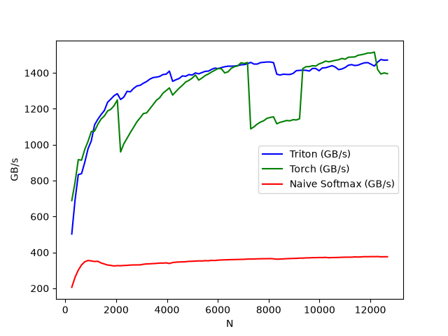

Note
Go to the end to download the full example code.
Fused Softmax
In this tutorial, you will write a fused softmax operation that is significantly faster than PyTorch’s native op for a particular class of matrices: those whose rows can fit in the GPU’s SRAM.
In doing so, you will learn about:
The benefits of kernel fusion for bandwidth-bound operations.
Reduction operators in Triton.
Motivations
Custom GPU kernels for elementwise additions are educationally valuable but won’t get you very far in practice. Let us consider instead the case of a simple (numerically stabilized) softmax operation:
import torch
import triton
import triton.language as tl
from triton.runtime import driver
DEVICE = triton.runtime.driver.active.get_active_torch_device()
def is_hip():
return triton.runtime.driver.active.get_current_target().backend == "hip"
def is_cdna():
return is_hip() and triton.runtime.driver.active.get_current_target().arch in ('gfx940', 'gfx941', 'gfx942',
'gfx90a', 'gfx908')
def naive_softmax(x):
"""Compute row-wise softmax of X using native pytorch
We subtract the maximum element in order to avoid overflows. Softmax is invariant to
this shift.
"""
# read MN elements ; write M elements
x_max = x.max(dim=1)[0]
# read MN + M elements ; write MN elements
z = x - x_max[:, None]
# read MN elements ; write MN elements
numerator = torch.exp(z)
# read MN elements ; write M elements
denominator = numerator.sum(dim=1)
# read MN + M elements ; write MN elements
ret = numerator / denominator[:, None]
# in total: read 5MN + 2M elements ; wrote 3MN + 2M elements
return ret
When implemented naively in PyTorch, computing y = naive_softmax(x) for \(x \in R^{M \times N}\)
requires reading \(5MN + 2M\) elements from DRAM and writing back \(3MN + 2M\) elements.
This is obviously wasteful; we’d prefer to have a custom “fused” kernel that only reads
X once and does all the necessary computations on-chip.
Doing so would require reading and writing back only \(MN\) bytes, so we could
expect a theoretical speed-up of ~4x (i.e., \((8MN + 4M) / 2MN\)).
The torch.jit.script flags aims to perform this kind of “kernel fusion” automatically
but, as we will see later, it is still far from ideal.
Compute Kernel
Our softmax kernel works as follows: each program loads a set of rows of the input matrix X strided by number of programs, normalizes it and writes back the result to the output Y.
Note that one important limitation of Triton is that each block must have a power-of-two number of elements, so we need to internally “pad” each row and guard the memory operations properly if we want to handle any possible input shapes:
@triton.jit
def softmax_kernel(output_ptr, input_ptr, input_row_stride, output_row_stride, n_rows, n_cols, BLOCK_SIZE: tl.constexpr,
num_stages: tl.constexpr):
# starting row of the program
row_start = tl.program_id(0)
row_step = tl.num_programs(0)
for row_idx in tl.range(row_start, n_rows, row_step, num_stages=num_stages):
# The stride represents how much we need to increase the pointer to advance 1 row
row_start_ptr = input_ptr + row_idx * input_row_stride
# The block size is the next power of two greater than n_cols, so we can fit each
# row in a single block
col_offsets = tl.arange(0, BLOCK_SIZE)
input_ptrs = row_start_ptr + col_offsets
# Load the row into SRAM, using a mask since BLOCK_SIZE may be > than n_cols
mask = col_offsets < n_cols
row = tl.load(input_ptrs, mask=mask, other=-float('inf'))
# Subtract maximum for numerical stability
row_minus_max = row - tl.max(row, axis=0)
# Note that exponentiation in Triton is fast but approximate (i.e., think __expf in CUDA)
numerator = tl.exp(row_minus_max)
denominator = tl.sum(numerator, axis=0)
softmax_output = numerator / denominator
# Write back output to DRAM
output_row_start_ptr = output_ptr + row_idx * output_row_stride
output_ptrs = output_row_start_ptr + col_offsets
tl.store(output_ptrs, softmax_output, mask=mask)
We can create a helper function that enqueues the kernel and its (meta-)arguments for any given input tensor.
properties = driver.active.utils.get_device_properties(DEVICE.index)
NUM_SM = properties["multiprocessor_count"]
NUM_REGS = properties["max_num_regs"]
SIZE_SMEM = properties["max_shared_mem"]
WARP_SIZE = properties["warpSize"]
target = triton.runtime.driver.active.get_current_target()
kernels = {}
def softmax(x):
n_rows, n_cols = x.shape
# The block size of each loop iteration is the smallest power of two greater than the number of columns in `x`
BLOCK_SIZE = triton.next_power_of_2(n_cols)
# Another trick we can use is to ask the compiler to use more threads per row by
# increasing the number of warps (`num_warps`) over which each row is distributed.
# You will see in the next tutorial how to auto-tune this value in a more natural
# way so you don't have to come up with manual heuristics yourself.
num_warps = 8
# Number of software pipelining stages.
num_stages = 4 if SIZE_SMEM > 200000 else 2
# Allocate output
y = torch.empty_like(x)
# pre-compile kernel to get register usage and compute thread occupancy.
kernel = softmax_kernel.warmup(y, x, x.stride(0), y.stride(0), n_rows, n_cols, BLOCK_SIZE=BLOCK_SIZE,
num_stages=num_stages, num_warps=num_warps, grid=(1, ))
kernel._init_handles()
n_regs = kernel.n_regs
size_smem = kernel.metadata.shared
if is_hip():
# NUM_REGS represents the number of regular purpose registers. On CDNA architectures this is half of all registers available.
# However, this is not always the case. In most cases all registers can be used as regular purpose registers.
# ISA SECTION (3.6.4 for CDNA3)
# VGPRs are allocated out of two pools: regular VGPRs and accumulation VGPRs. Accumulation VGPRs are used
# with matrix VALU instructions, and can also be loaded directly from memory. A wave may have up to 512 total
# VGPRs, 256 of each type. When a wave has fewer than 512 total VGPRs, the number of each type is flexible - it is
# not required to be equal numbers of both types.
NUM_GPRS = NUM_REGS
if is_cdna():
NUM_GPRS = NUM_REGS * 2
# MAX_NUM_THREADS represents maximum number of resident threads per multi-processor.
# When we divide this number with WARP_SIZE we get maximum number of waves that can
# execute on a CU (multi-processor) in parallel.
MAX_NUM_THREADS = properties["max_threads_per_sm"]
max_num_waves = MAX_NUM_THREADS // WARP_SIZE
occupancy = min(NUM_GPRS // WARP_SIZE // n_regs, max_num_waves) // num_warps
else:
occupancy = NUM_REGS // (n_regs * WARP_SIZE * num_warps)
occupancy = min(occupancy, SIZE_SMEM // size_smem)
num_programs = NUM_SM * occupancy
num_programs = min(num_programs, n_rows)
# Create a number of persistent programs.
kernel[(num_programs, 1, 1)](y, x, x.stride(0), y.stride(0), n_rows, n_cols, BLOCK_SIZE, num_stages)
return y
Unit Test
We make sure that we test our kernel on a matrix with an irregular number of rows and columns. This will allow us to verify that our padding mechanism works.
torch.manual_seed(0)
x = torch.randn(1823, 781, device=DEVICE)
y_triton = softmax(x)
y_torch = torch.softmax(x, axis=1)
assert torch.allclose(y_triton, y_torch), (y_triton, y_torch)
As expected, the results are identical.
Benchmark
Here we will benchmark our operation as a function of the number of columns in the input matrix – assuming 4096 rows.
We will then compare its performance against (1) torch.softmax and (2) the naive_softmax defined above.
@triton.testing.perf_report(
triton.testing.Benchmark(
x_names=['N'], # argument names to use as an x-axis for the plot
x_vals=[128 * i for i in range(2, 100)], # different possible values for `x_name`
line_arg='provider', # argument name whose value corresponds to a different line in the plot
line_vals=['triton', 'torch', 'naive_softmax'], # possible values for `line_arg``
line_names=["Triton", "Torch", "Naive Softmax"], # label name for the lines
styles=[('blue', '-'), ('green', '-'), ('red', '-')], # line styles
ylabel="GB/s", # label name for the y-axis
plot_name="softmax-performance", # name for the plot. Used also as a file name for saving the plot.
args={'M': 4096}, # values for function arguments not in `x_names` and `y_name`
))
def benchmark(M, N, provider):
x = torch.randn(M, N, device=DEVICE, dtype=torch.float32)
if provider == 'torch':
ms = triton.testing.do_bench(lambda: torch.softmax(x, axis=-1))
if provider == 'triton':
ms = triton.testing.do_bench(lambda: softmax(x))
if provider == 'naive_softmax':
ms = triton.testing.do_bench(lambda: naive_softmax(x))
gbps = lambda ms: 2 * x.numel() * x.element_size() * 1e-9 / (ms * 1e-3)
return gbps(ms)
benchmark.run(show_plots=True, print_data=True)

softmax-performance:
N Triton (GB/s) Torch (GB/s) Naive Softmax (GB/s)
0 256.0 502.483270 688.707951 205.648837
1 384.0 691.207320 789.564418 261.191296
2 512.0 833.510713 916.683728 301.032593
3 640.0 838.379986 913.813924 330.090625
4 768.0 902.669236 973.858388 348.035960
5 896.0 977.474311 1018.546700 355.004228
6 1024.0 1021.167279 1073.347953 352.416257
7 1152.0 1110.249132 1075.728267 349.221188
8 1280.0 1141.501302 1113.269643 350.506622
9 1408.0 1167.673114 1142.881816 341.246444
10 1536.0 1189.870082 1159.758809 335.484743
11 1664.0 1236.189970 1187.740280 329.689959
12 1792.0 1254.262448 1197.199787 327.423202
13 1920.0 1273.042618 1217.402037 324.524529
14 2048.0 1284.166929 1249.451716 326.249085
15 2176.0 1251.851992 959.578154 325.644199
16 2304.0 1265.437919 1005.411843 327.007954
17 2432.0 1297.470448 1036.104847 327.800836
18 2560.0 1294.681256 1067.818655 329.323985
19 2688.0 1313.583289 1096.980121 330.066972
20 2816.0 1327.081471 1127.358667 330.193814
21 2944.0 1330.825744 1149.392452 330.493622
22 3072.0 1342.467093 1173.552060 333.853035
23 3200.0 1351.825161 1177.202068 335.651492
24 3328.0 1365.373067 1200.250653 336.510343
25 3456.0 1374.049672 1223.349737 337.583415
26 3584.0 1376.307226 1247.656899 338.629167
27 3712.0 1380.296508 1261.374089 340.512989
28 3840.0 1390.730229 1286.635501 340.231545
29 3968.0 1392.900450 1301.491946 341.692971
30 4096.0 1410.000385 1316.535004 338.066780
31 4224.0 1353.046740 1276.401687 343.439565
32 4352.0 1361.818115 1296.327199 345.418963
33 4480.0 1368.973352 1314.792988 346.537015
34 4608.0 1383.211174 1331.031049 347.079464
35 4736.0 1381.145994 1349.096055 347.995409
36 4864.0 1390.494275 1358.272758 350.012435
37 4992.0 1388.080430 1370.615778 350.579924
38 5120.0 1399.891575 1387.974031 351.559691
39 5248.0 1394.734983 1359.639760 352.641567
40 5376.0 1401.850325 1371.429740 352.322999
41 5504.0 1408.586978 1385.082393 353.838963
42 5632.0 1409.927642 1394.096786 353.282763
43 5760.0 1419.762710 1405.356164 355.554626
44 5888.0 1426.718433 1414.843232 354.748882
45 6016.0 1423.681423 1425.102180 356.820136
46 6144.0 1429.785686 1422.610071 357.868788
47 6272.0 1434.167453 1399.954033 358.459866
48 6400.0 1437.459993 1405.684737 359.103685
49 6528.0 1437.318417 1425.332120 359.799792
50 6656.0 1437.997187 1434.739249 360.097136
51 6784.0 1440.519197 1439.170715 360.592865
52 6912.0 1444.922838 1456.261141 361.190447
53 7040.0 1446.233117 1452.645551 361.449811
54 7168.0 1451.062327 1457.917266 362.890775
55 7296.0 1458.487851 1088.127076 362.915912
56 7424.0 1449.059197 1099.777540 363.303911
57 7552.0 1449.308581 1114.985585 364.070605
58 7680.0 1457.251029 1125.863887 364.506375
59 7808.0 1459.061701 1133.750423 364.780592
60 7936.0 1460.824247 1147.008825 364.945887
61 8064.0 1460.766545 1151.922963 365.339129
62 8192.0 1457.246103 1155.048931 364.321739
63 8320.0 1392.895933 1116.355815 361.965094
64 8448.0 1387.981044 1124.580837 362.915827
65 8576.0 1392.834129 1129.148563 363.892902
66 8704.0 1391.496992 1134.772053 364.940439
67 8832.0 1391.142904 1132.944618 365.633050
68 8960.0 1396.985857 1139.137561 366.372973
69 9088.0 1412.249774 1137.920683 366.648854
70 9216.0 1414.017581 1144.444516 368.144079
71 9344.0 1415.190212 1424.220245 368.116448
72 9472.0 1414.383680 1434.637051 369.346250
73 9600.0 1410.396376 1435.316025 369.572802
74 9728.0 1425.009671 1439.966323 370.537007
75 9856.0 1424.477383 1438.234758 370.751208
76 9984.0 1411.888919 1450.095982 371.350773
77 10112.0 1427.608400 1456.570475 371.308782
78 10240.0 1428.749007 1465.793115 372.194457
79 10368.0 1434.468442 1461.790336 370.063661
80 10496.0 1440.221977 1465.868009 371.142655
81 10624.0 1432.480873 1470.119559 371.452650
82 10752.0 1418.156596 1473.372441 371.885975
83 10880.0 1421.827268 1480.638906 372.722406
84 11008.0 1430.005034 1476.120387 373.272498
85 11136.0 1442.697372 1487.086703 373.316699
86 11264.0 1446.054053 1488.180554 373.521243
87 11392.0 1440.977609 1489.033063 374.836936
88 11520.0 1443.267603 1498.340893 374.085991
89 11648.0 1450.843635 1501.423572 375.003669
90 11776.0 1456.291870 1505.272009 376.236294
91 11904.0 1457.095066 1510.738140 375.858384
92 12032.0 1447.868595 1510.999881 376.469528
93 12160.0 1437.976030 1515.962467 376.316080
94 12288.0 1460.555310 1418.105518 376.841759
95 12416.0 1474.547054 1393.819803 375.150336
96 12544.0 1470.798299 1399.966449 375.665524
97 12672.0 1471.605154 1395.668483 375.682429
- In the above plot, we can see that:
Triton is 4x faster than the Torch JIT. This confirms our suspicions that the Torch JIT does not do any fusion here.
Triton is noticeably faster than
torch.softmax– in addition to being easier to read, understand and maintain. Note however that the PyTorch softmax operation is more general and will work on tensors of any shape.
Total running time of the script: (0 minutes 36.096 seconds)